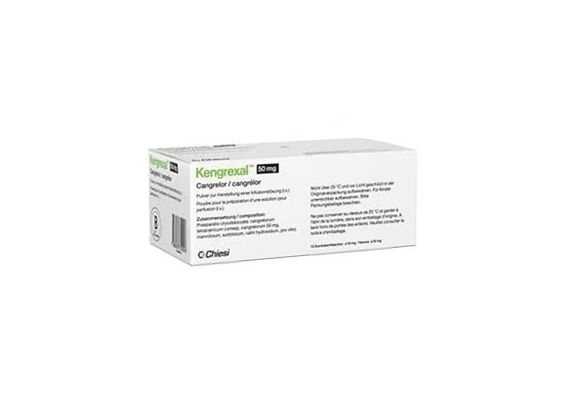

Kengrexal 50 mg Enjeksiyonluk/İnfüzyonluk Çözelti Hazirlamada Kullanilacak Konsantre İçin Toz, 10 Adet

Ne için kullanılır
KT · Bölüm 1KENGREXAL hastanede tıbbi personel tarafından kullanılması gereken bir ilaçtır.
KENGREXAL, her 10 ml’lik cam şişede (flakon) 50 mg kangrelora eşdeğer kangrelor tetrasodyum olarak adlandırılan bir madde içeren, kanın pıhtılaşmasını önleyen antitrombotik bir ilaçtır. Her bir flakon beyaz ila beyaza yakın renkte dondurularak kurutulmuş(liyofilize) toz içermektedir. KENGREXAL tamamen çözündüğünde flakon içeriği berrak, renksiz ila açık sarı renktedir.
Antitrombotikler, kan pıhtısı (tromboz) oluşumunu önleyen ilaçlardır.
Trombositler, kanda bulunan ve kümeleşerek kanın pıhtılaşmasına yardımcı olan çok küçük hücrelerdir. Pıhtılar bazen, kalpteki atardamar gibi hasar görmüş bir kan damarının içinde oluşabilir. Pıhtı, kan akışını engelleyebileceğinden (trombotik olay) ve kalp krizine yol açabileceğinden (miyokard enfarktüsü) oldukça tehlikelidir.
KENGREXAL trombositlerin kümeleşmesini azaltır ve kan pıhtısı oluşumunu önler.
Doktorunuz KENGREXAL'i size kalbinizde tıkalı kan damarları (koroner arter hastalığı) bulunması nedeniyle tıkanıklığı gidermek için operasyona (Perkütan koroner girişim- PKG- daralmış durumdaki bir koroner artere balon uçlu bir kateterle girilip, balonu şişirerek genişletme) ihtiyacınız olduğu durumlarda uygular. Bu işlem sırasında kan damarınızı açık tutmak için damarınıza küçük bir tüp (stent) takılabilir. KENGREXAL kullanımı bu işlemin pıhtı oluşturma ve kan damarlarını tekrar tıkama riskini azaltmaktadır.
KENGREXAL yalnızca yetişkinlerde kullanım içindir.